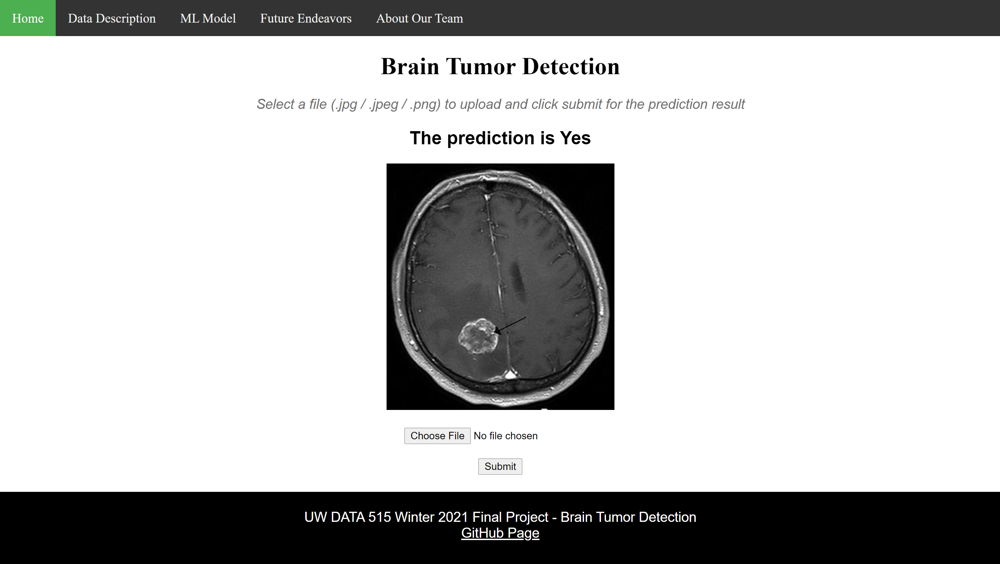

Wikipedia Article Web Traffic Time Series Analysis
Forecasting future views of Wikipedia pages by total traffic, types, and topics
This project outlines the exploration of web traffic for a sample of approximately 145,000 Wikipedia articles
over a two year period. The attached report outlines several forecasts for the weekly number of page views
over time, and explores potential relationships between page views, traffic types and article topics.
Brain Scan Tumor Classification using a Convolutional Neural Network
The Brain Scan Tumor Classification is a machine learning project created by myself and my fellow academic
colleagues that classifies 2D brain scan images as tumorous or not.
Our website allows users to upload their own (.jpg, jpeg, or .png) photos into the model,
and get a prediction result. For this project, we are using a 2D Convolutional Neural Network with nine
hidden layers to classify 2D MRI brain scan images as tumorous or non-tumorous.
Our model was built with Tensorflow, utilizing the Keras API. Our model's input is composed of standardized
240x240x1 single-channel image arrays.
After training, an image passed to the model will produce a prediction of either 1 (tumorous)
or 0 (non-tumorous).

An image of our final website: "Do I have a Tumor?"
Funding a Start-up: Evaluating the Business Impact of Funding Types, Sources, Amounts and Timing
This study reviews several questions of interest for entrepreneurs as well as investors about Start-up
organizations. We performed our analysis using the Kaggle dataset from Crunchbase’s 2014 snapshot,
which includes approximately 50,000 companies. We found that the average amount of money raised,
and the average number of funding rounds, both vary by industry.
We concluded that the average amount of seed money invested is increasing 13.5% annually.
We also found, controversially, that companies that did not have seed rounds are 4 times more likely
to have a venture round. Our results should be received with caution, as our dataset included strong
survivorship, regional, and market bias.
There is an astonishing amount of objects in space. According to the European Space Agency,
the number of debris objects in orbit: 34,000 for space objects that have a size greater than 10 cm,
900,000 for objects that have a size between 1 to 10 cm and 128,000,00 for objects that have a size between
1mm to 1cm (“Distribution of Space Debris in Orbit around Earth.”, ESA).
In this project, we are interested in learning about man-made objects in Earth orbits and the
space pollution associated with them. We care because space junk can impact satellites,
causing network outages and costly damage. It will also impact future launches and global satellite
internet endeavors. By definition space junk is defined as any piece of debris that is left in space by
humans. There are no limits on size, and our space junk includes everything from satellites that no longer
work, to paint flecks.
We use data mainly from Space-Track.org, a free access, excel exportable data source that also offers
APIs to do data analysis and create corresponding visualizations in order to answer the following questions:
Where did all of the space junk come from?
How big is the space junk?
What percentage of the earth’s orbits are filled with junk?
How has the amount of space junk changed over time and what will it look like in the future?
Generating the Euler Totient Function using Sturmian Words
Professor Dan Rockwell, Will Wodrich, and I worked together to discover a new way to
generate Euler's phi function using sturmian words.
The Euler phi function is used in several cyber security algorithms,
and we found that our new algorithm had a lower computational complexity.
Our findings are referenced in the Encyclopedia of Natural Numbers (Sum of Totient function)
and were presented at the Celebrating Undergraduate Excellence research fair.
An Algorithmic Approach to Generating A Specific Binary Tree Research Poster